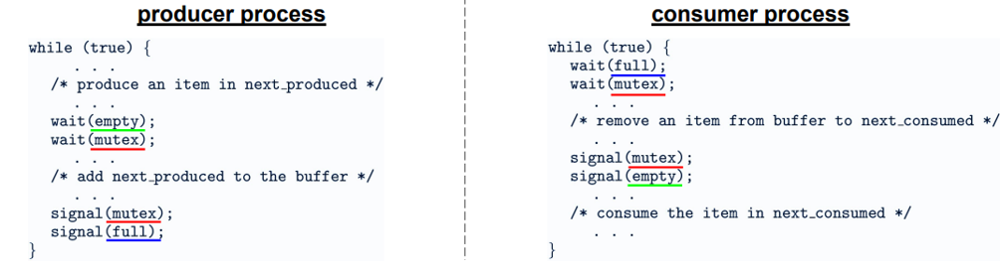

Race condition, sezione critica, mutex, semafori, monitor e i problemi classici: produttore-consumatore, lettori-scrittori e i cinque filosofi.
Una race condition si verifica quando il risultato di un'operazione dipende
dall'ordine temporale di esecuzione di thread o processi concorrenti. L'esempio classico: due thread
incrementano la stessa variabile condivisa con count++. A livello macchina questa è
una sequenza di tre istruzioni (leggi, incrementa, scrivi). Se i thread si interleaving in modo sfortunato,
entrambi leggono lo stesso valore, lo incrementano, e scrivono lo stesso risultato: l'incremento di un thread
viene perso.
Le race condition sono notoriamente difficili da debuggare perché si manifestano in modo non deterministico: il comportamento corretto può presentarsi migliaia di volte prima che si verifichi quello errato. Strumenti come ThreadSanitizer (TSan) aiutano a rilevarle staticamente.
Una sezione critica è un segmento di codice che accede a risorse condivise (variabili, file, strutture dati) che non può essere eseguito da più di un processo/thread alla volta. Per garantire la correttezza, ogni soluzione al problema della sezione critica deve soddisfare tre requisiti.
Mutua esclusione: al massimo un processo alla volta esegue la propria sezione critica.
Progress: la decisione su chi entra nella sezione critica non può essere rimandata indefinitamente; solo i processi che vogliono entrare partecipano alla decisione.
Bounded waiting: esiste un limite al numero di volte che altri processi possono entrare nella sezione critica dopo che un processo ha fatto richiesta e prima che quella richiesta venga soddisfatta (nessuna starvation).
Il mutex (mutual exclusion lock) è il meccanismo di sincronizzazione più semplice.
Ha due stati (locked/unlocked) e due operazioni atomiche: acquire() prima della
sezione critica e release() dopo. Se un thread chiama acquire() su un mutex già locked, si blocca finché non viene rilasciato.
La versione spinlock non sospende il thread ma lo tiene in un busy-wait attivo
(loop). Efficiente se l'attesa è breve (evita il context switch), ma spreca CPU se l'attesa è lunga. La versione
blocking mutex sospende il thread in attesa in una coda, liberando la CPU. In Linux
la primitiva è pthread_mutex_t con pthread_mutex_lock()/pthread_mutex_unlock().
Un semaforo è una variabile intera gestita dal programmatore con due operazioni atomiche: wait(S) (anche detta P o down) e signal(S) (anche detta V o
up). wait(S) decrementa S e blocca il thread se S è diventato negativo. signal(S) incrementa S e sblocca un thread in attesa se ce n'è uno.
Il semaforo binario (valori 0/1) si comporta come un mutex. Il semaforo contatore (valori 0..N) controlla l'accesso a un pool di N risorse identiche:
wait() acquisisce una risorsa, signal() la rilascia.
Sono più potenti dei mutex: permettono la sincronizzazione tra thread (non solo mutua esclusione). In Linux:
sem_init(), sem_wait(), sem_post().
Il monitor è un costrutto di alto livello gestito dal compilatore o il runtime che combina dati condivisi, operazioni
su quei dati e sincronizzazione in un'unica struttura. Il compilatore garantisce che solo un thread alla volta
esegua una procedura del monitor. In Java, la parola chiave synchronized trasforma
un metodo in una procedura di monitor.
I monitor usano condition variables per la sincronizzazione interna: wait() sospende il thread e rilascia il monitor (permettendo ad altri di entrare), notify() risveglia un thread in attesa sulla condition. Più sicuri dei semafori perché
nascondono i dettagli di sincronizzazione, ma meno flessibili.
Il problema del buffer limitato: un produttore genera elementi e li inserisce in un buffer di capacità N; un consumatore li preleva. Il problema richiede sincronizzazione su tre fronti: il produttore non può inserire in un buffer pieno; il consumatore non può prelevare da un buffer vuoto; l'accesso al buffer deve essere mutuamente esclusivo.
La soluzione classica con semafori usa tre semafori: empty (inizializzato a N,
conta gli slot liberi), full (inizializzato a 0, conta gli slot pieni) e mutex (binario, per l'accesso esclusivo al buffer). Il produttore fa wait(empty), inserisce, signal(full); il consumatore fa
wait(full), preleva, signal(empty).

Una risorsa (database, file) può essere letta contemporaneamente da più thread, ma la scrittura richiede accesso esclusivo. Il problema è bilanciare il parallelismo dei lettori con l'esclusività degli scrittori.
Prima variante (priorità ai lettori): nessun lettore aspetta a meno che uno
scrittore abbia già il lock. Rischio: starvation degli scrittori se i lettori arrivano continuamente. Seconda variante (priorità agli scrittori): quando uno scrittore è pronto, nessun nuovo
lettore può entrare. Rischio: starvation dei lettori. In pratica si usano pthread_rwlock_t con politica configurabile.
Cinque filosofi siedono intorno a un tavolo con 5 bacchette condivise, una tra ogni coppia adiacente. Ogni filosofo alterna fasi di pensiero e di mangiata; per mangiare ha bisogno di entrambe le bacchette ai suoi lati. La soluzione naïve (prendi la bacchetta sinistra, poi la destra) porta al deadlock: se tutti i filosofi prendono la bacchetta sinistra simultaneamente, nessuno riesce a prendere la destra.
Le soluzioni classiche sono tre. Asimmetria: i filosofi con numero pari prendono prima la destra, quelli dispari prima la sinistra, rompendo la circolarità. Pickup atomico: le due bacchette si prendono insieme o nessuna (richiede un mutex globale). Semaforo limite: al massimo 4 filosofi alla volta possono sedersi a tavola, garantendo che almeno uno riesca sempre a mangiare.